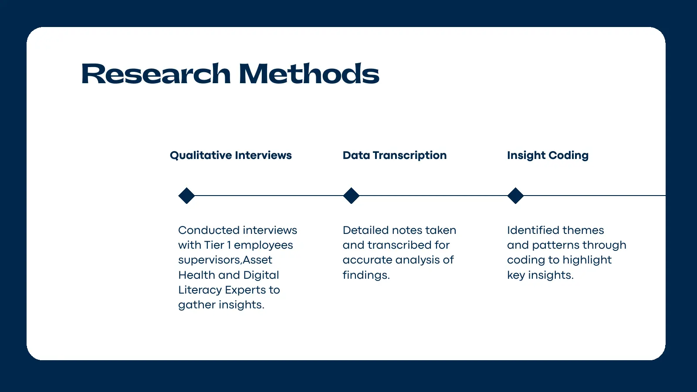
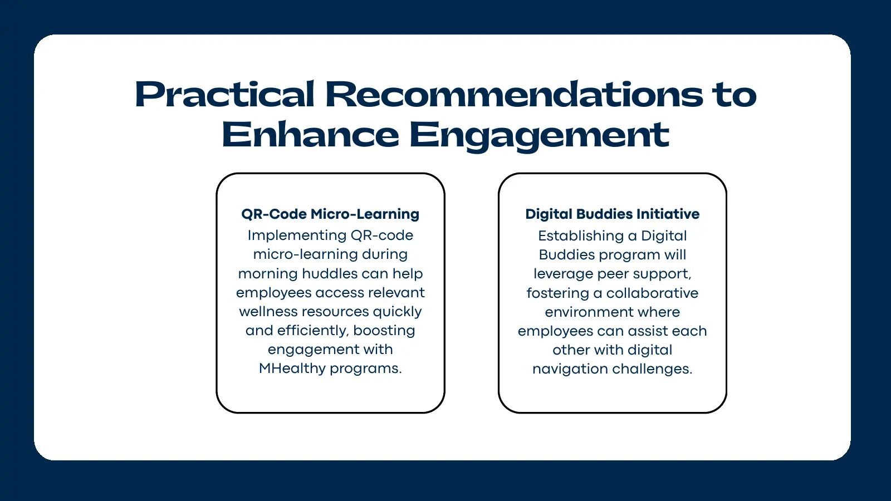
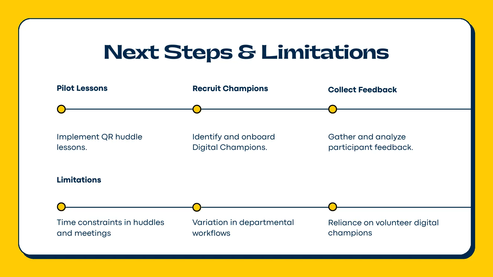

The question
MHealthy found that frontline (Tier 1) employees weren't taking part in its digital wellness resources and asked us to find out why. Our starting question was how to help these employees build the digital skills that would lead them to use the programs more.
What we did
We ran nine interviews with frontline employees, supervisors and digital-literacy experts, observed staff on site at a campus dining hall, transcribed our notes and coded them into themes.


My part
Roles on our team were fluid, and I picked up whatever needed doing. Specifically, I:
- conducted interviews, including sessions with dining hall staff and a digital-literacy expert
- designed the first version of our affinity wall, condensing the interviews into sticky notes that we then grouped by theme
- noticed that email wasn't reaching frontline staff during their shifts, so we recruited in person on their breaks instead
- wrote the introduction and conclusion of the final report and edited the whole document
What we found
The employees we talked to were comfortable with technology. They use smartphones, banking apps and social media without trouble. The barriers were in the systems around them:
- Most MHealthy information goes out by email, which assumes people can check an inbox during a shift that keeps them away from a computer.
- Signing in takes several steps and a password that expires, so people who log in rarely get stuck.
- Shift workers had little access to IT help.
- Many people didn't know which programs were available to them, and they relied on coworkers and supervisors for help.
Recommendations
- QR-code micro-lessons during paid morning huddles, so staff can open a resource on their phone in a few minutes.
- A Digital Buddies program through the existing MHealthy Champions network, building on the peer help people already rely on.
We presented both to the client, along with the limits: short huddle time, workflows that vary by department, and reliance on volunteers. These are recommendations; we didn't pilot them during the semester.



